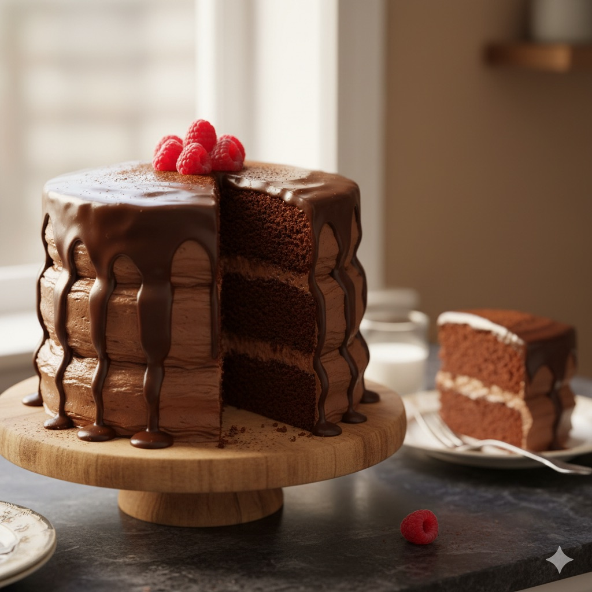

Czekoladowe ciasto
Przygotowanie: 30 min • Pieczenie: 35 min • Porcje: 8

Składniki
- 2 szklanki mąki pszennej
- 1 i 3/4 szklanki cukru
- 3/4 szklanki kakao
- 2 łyżeczki sody oczyszczonej
- 1 łyżeczka proszku do pieczenia
- 1 łyżeczka soli
- 1 szklanka maślanki
- 1/2 szklanki oleju
- 2 duże jajka
- 1 łyżeczka ekstraktu waniliowego
- 1 szklanka wrzątku
Kroki
- Nagrzej piekarnik do 175°C. Nasmaruj i oprósz mąką dwie tortownice 23 cm.
- W misce wymieszaj: mąkę, cukier, kakao, sodę, proszek i sól.
- Dodaj maślankę, olej, jajka i wanilię. Miksuj 2 minuty.
- Wlej wrzątek (masa będzie rzadka), rozlej do foremek.
- Piec 30–35 minut, do suchego patyczka. Wystudź i udekoruj.